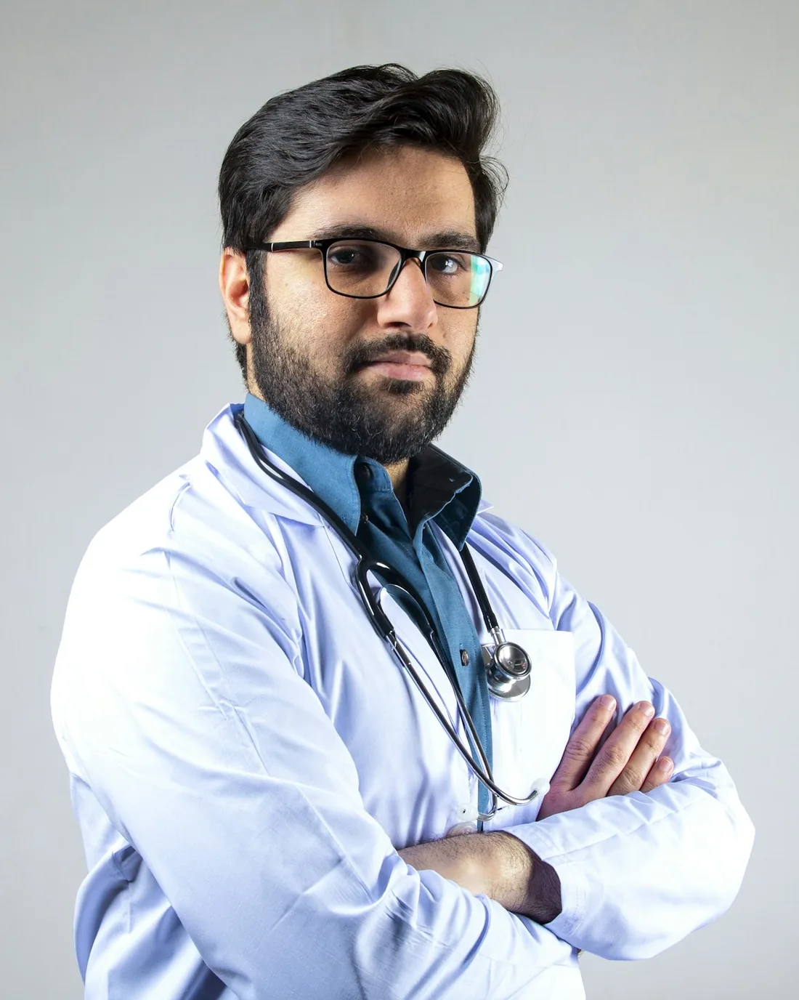
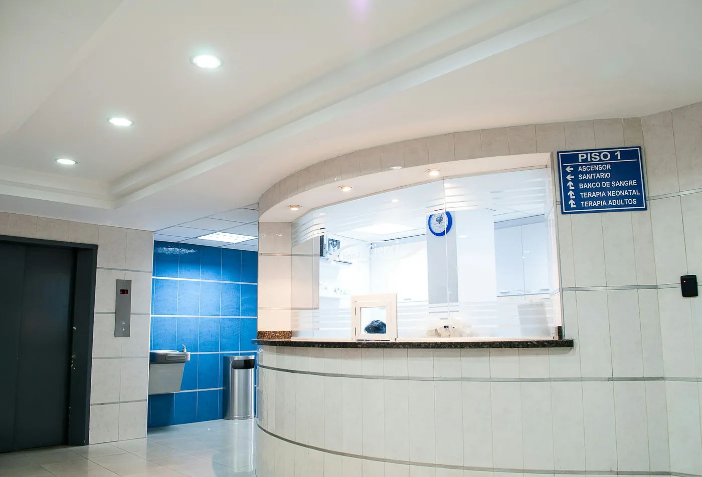

Tansiyon ve kalp-damar riski
Yüksek tansiyonun takibi, ev ölçümlerinin değerlendirilmesi ve risk faktörlerinin birlikte ele alınması.
Tansiyon, şeker, tiroid ve mide şikâyetlerinden yıllık kontrole kadar; acele etmeden dinleyen, bulguları anlaşılır bir dille açıklayan randevulu muayene.

İç hastalıkları; birden fazla organı ilgilendiren, uzun süreli takip gerektiren durumları bir arada değerlendirir.
Yüksek tansiyonun takibi, ev ölçümlerinin değerlendirilmesi ve risk faktörlerinin birlikte ele alınması.
Şeker ölçümleri, HbA1c takibi, ilaç düzenlemesi ve beslenmeyle ilgili yönlendirme.
Halsizlik, kilo değişimi ve çarpıntı gibi şikâyetlerde tiroid testleri ve ultrason yönlendirmesi.
Reflü, hazımsızlık, karın ağrısı ve bağırsak alışkanlığı değişikliklerinde muayene ve tetkik planı.
Kan yağları, karaciğer yağlanması ve kilo yönetiminde düzenli kontrol.
Yaşınıza ve aile öykünüze göre planlanan tahliller; sonuçlar muayenede tek tek anlatılır.
İki seçim yapın; genel tarama önerilerine göre konuşulması faydalı olan kontrolleri görün. Size uygun olanlar muayenede birlikte belirlenir.
Bu liste genel bilgilendirme amaçlıdır, tanı veya tedavi önerisi değildir. Şikâyetiniz varsa beklemeden muayene olun.
WhatsApp ya da telefonla gün ve saat belirlenir; aç gelmeniz gerekiyorsa önceden söylenir.
Şikâyetleriniz, kullandığınız ilaçlar ve aile öykünüz dinlenir; fizik muayene yapılır.
Gerekli görülen tahlil ve görüntülemeler planlanır; nedenleri size açıkça anlatılır.
Sonuçlar birlikte değerlendirilir, tedavi ve kontrol takvimi yazılı olarak verilir.

Muayenede önce dinlemeyi, sonra bulguları sade bir dille anlatmayı önemsiyoruz. Hangi tahlilin neden istendiğini bilerek karar vermenizi istiyoruz.
Kronik hastalıklarda düzenli takip, ilaç uyumu ve yaşam alışkanlıklarını birlikte planlıyor; gerekirse ilgili branşlara yönlendiriyoruz.
Şeker ve kolesterol gibi bazı tahliller için 8–12 saat açlık gerekir. Randevu sırasında size ayrıca hatırlatılır; su içebilirsiniz.
Kimliğiniz, kullandığınız ilaçların listesi ya da kutuları, varsa son bir yıla ait tahlil ve rapor sonuçlarınız.
Rutin kan tahlillerinin çoğu aynı gün ya da ertesi gün çıkar; sonuçlar kontrol muayenesinde birlikte değerlendirilir.
WhatsApp hattından yazmanız yeterli; uygun ilk saate birlikte kaydırılır.
Formu doldurduğunuzda talebiniz WhatsApp üzerinden muayenehaneye iletilir; saat onayı için size dönüş yapılır.